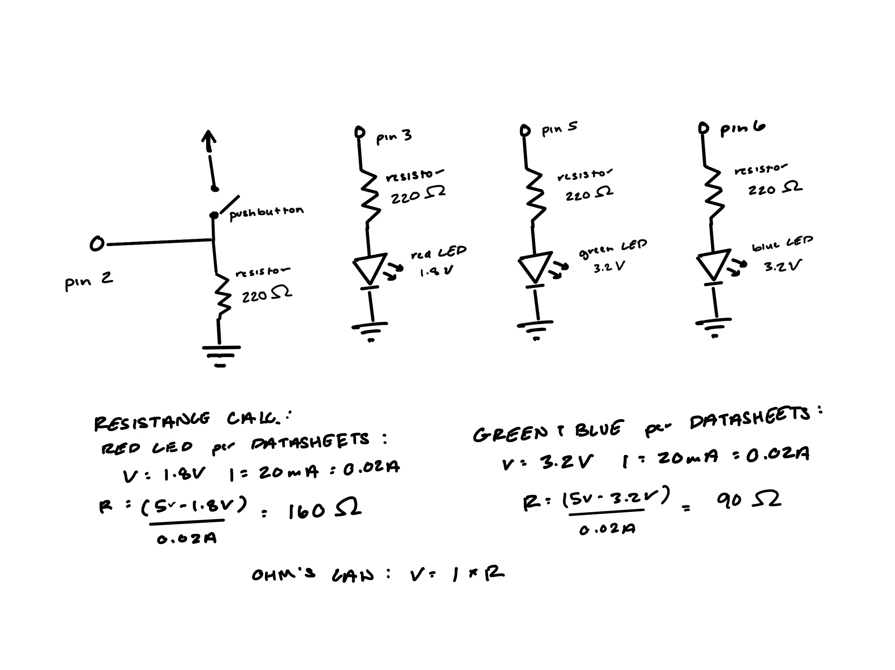
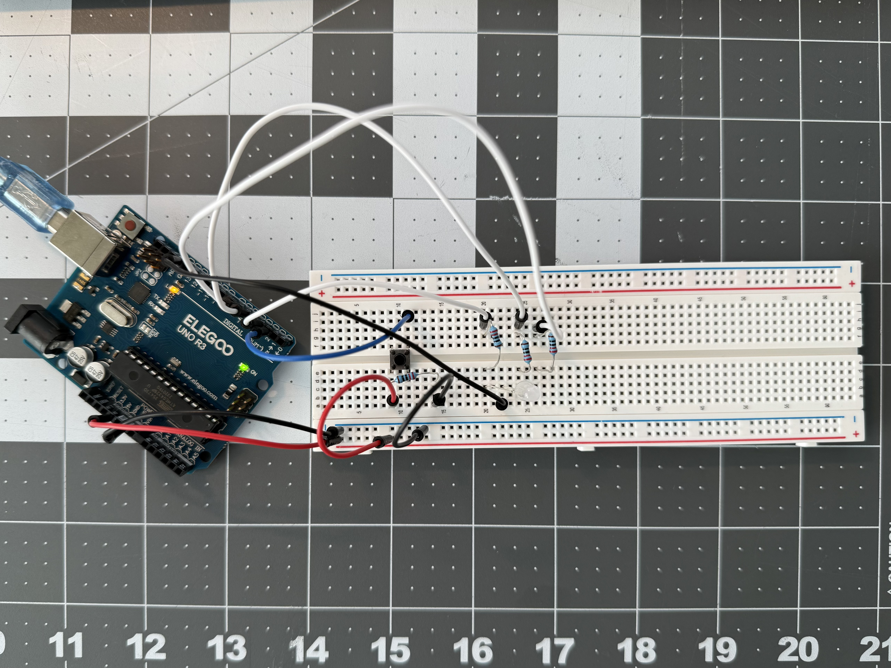
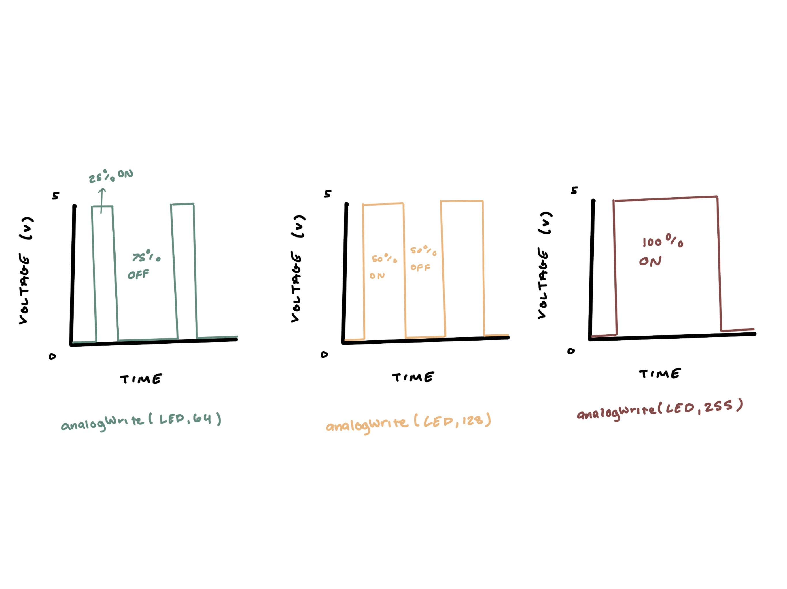

In my A2 circuit operation, when the button is pressed, the RGB LED cycles through colors, pausing for half a second before fading into a new color.
In my A2 circuit operation, when the button is pressed, the RGB LED cycles through colors, pausing for half a second before fading into a new color.

The schematic for this circuit shows how the components are connected. The button is connected to pin 2, and the RGB LED's red, green, and blue pins are connected to pins 3, 5, and 6 respectively. Additionally, each LED pin and button has a 220-ohm resistor in series to limit the current.

The physical circuit ensures that all components are properly connected as per the schematic.
const int buttonPin = 2; //button is connected to pin 2
int buttonState = 0; //stores button's current state
void setup() {
pinMode(3, OUTPUT); //intiaizes pin 3 as red LED output
pinMode(5, OUTPUT); //intializes pin 5 as green LED output
pinMode(6, OUTPUT); //intializes pin 6 as blue LED output
pinMode(buttonPin, INPUT); //intialzes button as input
}
void loop() {
buttonState = digitalRead(buttonPin); //reads the state of button
if (buttonState == HIGH) { //checks if the button is pressed
for (int i = 0; i < 10; i++) { //repeats loop 10 times
int redValue = random(0, 256); //assigns random brightness to red LED
int greenValue = random(0, 256); //assigns random brightness to green LED
int blueValue = random(0, 256); //assigns random brightness to blue LED
analogWrite(3, redValue); //sets red LED to assigned brightness
analogWrite(5, greenValue); //sets green LED to assigned brightness
analogWrite(6, blueValue); //sets blue LED to assigned brightness
delay(500); //determines how long until color changes
}
} else { //checks if the button is not pressed
digitalWrite(3, LOW); //red LED is turned off
digitalWrite(5, LOW); //green LED is turned off
digitalWrite(6, LOW); //blue LED is turned off
}
}
For the code I made sure to include of the requried elements; I used a for-loop to fade through different colors, digitalWrite() to turn off the LEDs when the button is not pressed, digitalRead() to read the button state, and analogWrite() to set the brightness of each LED.
1.

2. The battery life capcacity formula is mAh / mA = hours. If all three LEDs are on at full brightness, the total current would be 60mA, so the battery life of a 1200maH battery would be 1200mAh / 60mA = ~20 hours. But with my code assigning random brightness values to each LED, it would be fair enough to assume that each LED would be on at half brightness on average, which would make the total current 30mA, so the baterry life on my cirucit would be 1200mAh / 30mA = ~40 hours.
3. I measured the red LED of the RGB LED, and I found that the voltage would have a range from 0.30V to 1.8V. This makes sense since the LED theoreotical forward voltage of the LED is 1.8V, and the random brightness values in the code cause the voltage to vary.